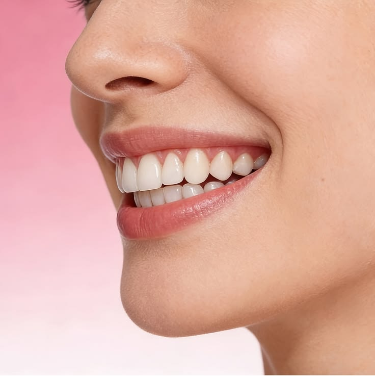

Dental Implants
A restorative option that may replace a missing tooth. Planning begins with an individual assessment.
Learn more →Explore treatment options at DentisTree. Every smile is different; your dentist will help you understand which choices may suit your needs.
Explore Painless Dentistry →
From preventive visits to restorative treatment, we’ll talk through the purpose, process and considerations for your care.
A restorative option that may replace a missing tooth. Planning begins with an individual assessment.
Learn more →Thoughtful planning that considers your smile’s appearance and your individual goals.
Learn more →Adhesive restorations selected to suit the condition and structure of a tooth.
Learn more →Endodontic treatment and retreatment, following clinical assessment and discussion.
Learn more →Custom restorations that may help address damaged teeth or missing teeth.
Learn more →Discuss tooth alignment options and whether clear aligners may be appropriate for you.
Learn more →Supportive dental visits and care planned around a child’s age and needs.
Learn more →A preservation-minded approach to restoring natural tooth structure where suitable.
Learn more →Ask our team about comfortable care and treatment options.